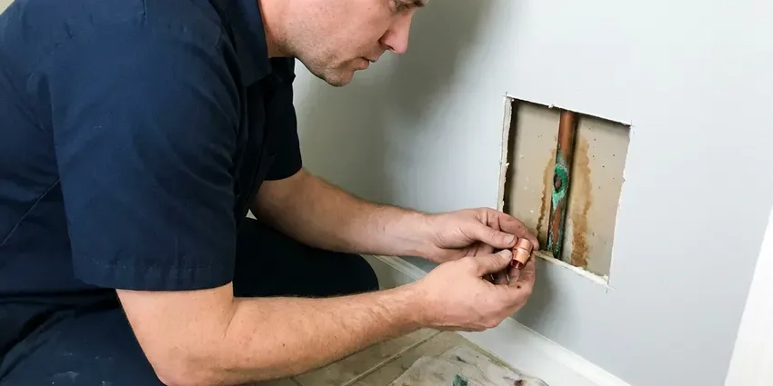

Foundation Leak Repair in Hilton Head Island, SC
Hot water lines under concrete wear through where they rub on gravel. KBN Plumbing finds those pinholes in Hilton Head Island, SC and stops them properly.
- Spot Repairs Through Concrete
- Small, Neat Concrete Cuts
- PEX Reroutes Overhead
- Pressure Testing on Every Call

Water Under the Foundation? Get It Located in Hilton Head Island, SC
Every week a slab leak runs, the wet spot under the house gets bigger, so book a visit now.
Under-Foundation Leak Detection in Hilton Head Island, SC
KBN Plumbing treats a foundation leak as a plumbing job with a structural side to it, because wet soil under a slab is what turns a pipe repair into a foundation repair. Clay that swells when wet and shrinks in dry spells can shift buried sewer lines over time, leading to sags, separated joints and root intrusion. First the water gets shut down, then you see two written options, a spot repair and a reroute. You make the call.
Work we handle every week:
- Repairing copper and PEX lines correctly
- Restoring water flow after a slab leak
- Direct repairs through concrete with proper patching and compaction

Additional Plumbing Repair Services in Hilton Head Island, SC
We offer expert plumbing repair services across Hilton Head Island, SC to fix leaks, restore flow, and keep your system running smoothly.


Customers
Why Choose KBN Plumbing for Foundation Leak Repair in Hilton Head Island, SC?
Water under a foundation does not stay put. It travels along the pipe trench and can cause heaving, settling and cracks that cost much more to fix than the leak itself.
- Multiple Options, You see direct repair, reroute and repipe priced side by side and pick what fits.
- Locate Before Cutting, Acoustic gear and thermal imaging find the leak so we cut one small opening instead of trenching across the room.
- Accurate Locating, We mark the leak before any cutting, so the concrete opening stays as small as possible.
Citywide Coverage
Every neighborhood of Hilton Head Island is in our area for foundation leak calls. Older streets near the center of town tend to have copper under the slab, and newer subdivisions on the edges usually have PEX, so we stock both. Same gear either way.
Experienced Team
Our plumbers have opened a lot of slabs in South Carolina homes. Training on new detection tools happens yearly. That includes updated ground microphones, thermal cameras and tracer gas rigs, because the better the locating, the smaller the hole in your floor.
Safety-First Approach
All repairs meet local plumbing code, and concrete patches are compacted and finished properly. We pull the permit. If a reroute or repipe requires a permit, we file it and meet the inspector so you don't have to wait around.
Trusted Certified Hilton Head Island Plumbing Services Professionals
At KBN Plumbing, we are proud to offer certified plumbing services throughout Hilton Head Island, SC. Credentials matter in this trade. Our plumbers hold recognized industry credentials, and they follow strict safety and quality rules on every repair, installation and maintenance call we run.
Call Us Now PHCC Plumbing Contractor Recognition
PHCC Plumbing Contractor Recognition Better Business Bureau (BBB) Accreditation
Better Business Bureau (BBB) Accreditation Angi Certified Pro
Angi Certified Pro ISO 9001 Quality Management Certification
ISO 9001 Quality Management CertificationFoundation Leak Repair Options in Hilton Head Island, SC
Slab Leak Detection and Repair in Hilton Head Island
Slab leaks show up quietly. Sometimes all you get is a warm spot on the tile or a bill that creeps up. KBN Plumbing isolates the hot and cold sides, then uses acoustic and infrared gear to locate the break under your concrete. For Hilton Head Island homes, the fix might be a spot repair through the floor, a reroute through the attic, or a tunnel from outside, depending on where the leak sits and how old the pipe is.

Leak Detection Tools We Use in Hilton Head Island, SC
Infrared cameras, acoustic listening gear and tracer gas cover most leaks we chase in Hilton Head Island, SC. Tracer gas helps on tiny leaks. We push a hydrogen and nitrogen mix into the drained line and sniff for it at the surface, which finds pinholes that make almost no sound under thick concrete or carpet pad.
Emergency Foundation Leak Service in Hilton Head Island
A main line that splits under the slab can push water up through grout lines within hours. Close the main valve right away. KBN Plumbing sends a crew to Hilton Head Island to isolate the broken line, cap it so the rest of the house has water, and set up the permanent repair for the next morning if it can't be done that night.
Same-Day Foundation Leak Response in Hilton Head Island, SC
A large leak under the slab can flood floors and soak the ground fast. Turn off the main. We walk you through the shutoff over the phone, send a crew to locate the break, and isolate that line so the kitchen and bathrooms still have water while we plan the repair.
Commercial Foundation Leak Repair in Hilton Head Island
Restaurants, offices and retail spaces in Hilton Head Island get slab leaks too, and KBN Plumbing handles them. Downtime costs money. We stage the work so the main can stay on for most of the building while one branch is down, and we cut and patch concrete after hours if that is what keeps you open. Perimeter waterproofing is an option on larger buildings.
Foundation Leak Repair Cost Comparison in Hilton Head Island, SC
Direct repairs usually cost least up front. Flooring adds to it. Reroutes run a bit more but skip the concrete and remove the chance of another leak in the old line, while a full repipe makes sense when the house has had two or three leaks already. We line up the full cost of each, flooring and drywall included.
Post-Tension Slab Leak Repair in Hilton Head Island
Many newer homes sit on post-tension slabs with steel cables under thousands of pounds of tension. Cutting one is dangerous. Radar scanning maps the cables before any cut, and when the leak is too close to a tendon, we reroute the line instead.

Tunneling for Foundation Leaks in Hilton Head Island, SC
Tunneling means digging under the slab from outside the house. No floor gets cut. We dig a pit beside the foundation and hand-tunnel to the leak, which works well when the break sits under cabinets, a tiled shower or hardwood you do not want torn up. KBN Plumbing backfills and compacts the tunnel when the Hilton Head Island, SC repair is done.
Nearby Foundation Leak Repair in Hilton Head Island, SC
Searching 'foundation leak repair near me' in Hilton Head Island, SC usually means something feels wrong underfoot. KBN Plumbing works in neighborhoods all over town and has a good idea which subdivisions used copper under the slab and which used PEX. It speeds up the diagnosis.
We know the soil, the foundation types and the way homes here were built. It guides which repair we choose. An older slab and a post-tension slab need different handling, and knowing which you have before we arrive saves an hour. Detection visits usually take one to three hours.
KBN Plumbing at a Glance
- Licensed and insured plumbers serving Hilton Head Island, SC
- 24/7 emergency service with same-day scheduling
- Upfront, flat-rate pricing before work begins
- 4.8-star rated by 596+ South Carolina customers
Hilton Head Island Map
Hilton Head Island Information
- Population
- 38,097
- Area codes
- Local
- Service area
- Hilton Head Island and communities within 40 miles
- Nearby
- Bluffton, Charleston, North Charleston, Summerville
A foundation leak in Hilton Head Island, SC is two problems at once, because water soaking one patch of ground can lift or drop that section of slab. Clay that swells when wet and shrinks in dry spells can shift buried sewer lines over time, leading to sags, separated joints and root intrusion.
Expert Services
Reach out to KBN Plumbing for honest, reliable plumbing from people who know the trade in Hilton Head Island, SC.
Our Specialized Plumbing Services in Hilton Head Island, SC
At KBN Plumbing, we handle the full list of plumbing services across Hilton Head Island, SC. From leak detection to full system installs, our team works fast and charges fair prices on homes and commercial properties alike. Here are the core services we offer:


Our Foundation Leak Repair Steps in Hilton Head Island, SC
We test the lines, find the leak and then repair it with as little cutting as we can manage.
Schedule an Inspection
Call (864) 588-3813 or fill out the form. We get the basics over the phone and book a time that works for you.
Test and Inspect
A technician tests the lines and finds the break, and checks whether the water is coming from plumbing, groundwater or a drainage problem outside.
Written Proposal
You get a written proposal with the repair method, materials, time on site and price. We wait for your go-ahead.
Frequently Asked Questions About Foundation Leak Repair in Hilton Head Island
Leak detection typically costs $150 to $450. Repairs vary more. Direct repairs through concrete usually range from $1,500 to $4,000, and reroutes often run $1,800 to $5,000 depending on the length of the new line and how hard the walls are to get into. Full repipes are quoted individually.
Policies often cover sudden leaks. They rarely pay for the pipe. Coverage usually goes to tearing out and replacing damaged floors and walls rather than the pipe repair, so check the wording of your own policy.
Look for wet spots on floors or walls, mildew smells and standing water around the foundation. The bill usually goes up. Cracks in the foundation or interior walls that widen over a few months also point to a leak changing the soil, so have the plumbing tested before you call a foundation repair company.
Parts and labor are both covered on our foundation leak repairs. You see the terms first. A new PEX reroute typically gets longer coverage than a patch on aging copper, since the pipe around it is new. Details go on your Hilton Head Island estimate.
Insurers often pay for getting to the leak and fixing resulting damage, though rarely the pipe. We document the job with photos and notes for your claim.
Damp or warm floor spots, cracked tile, mildew under carpet and a meter that turns with every fixture off all point to it. A jump in the water bill is often the first clue.
A hairline crack in a basement wall can sometimes be sealed with a store-bought kit. Plumbing leaks are different. A poor repair can wet more soil and fail inspection, so pipe leaks and structural cracks belong with a licensed plumber or engineer.
Gutters and downspouts should carry water at least a few feet from the house. Grading matters too. Soil around the foundation should slope away from the wall, stay at a fairly even moisture level and not erode into channels, and it is smart to have the plumbing checked for slow leaks every couple of years.
What Our Customers Say About Our Plumbing Experts

Marcus H.
Grease from the fryer line kept clogging the kitchen drain at my diner. KBN Plumbing hydro jetted the line after closing, showed me the buildup on camera, and set us up on a quarterly cleaning so it does not catch us on a Friday again.
Drain Cleaning · Bluffton, SC
Greg S.
I manage a small strip center with six tenants. KBN Plumbing handles our annual backflow testing and fixed a recurring clog in the shared sewer line that had been backing into the nail salon. Their reports come in clean and on time.
Commercial Plumbing · Hilton Head Island, SC
Megan L.
Our upstairs tub drained so slowly that every shower turned into a bath. KBN Plumbing pulled a wad of hair out of the stopper and then snaked the line past the trap. Three months later it still drains fast.
Drain Cleaning · Summerville, SC
Monica A.
Our water bill nearly doubled in one month with no change in how we used water. The tech checked the meter, heard the leak under the hallway with his equipment, and opened a hole about a foot square. Fixed the same day.
Slab Leak Repair · Goose Creek, SC
Carlos V.
Our house still had galvanized pipe, and upstairs the shower was a trickle. The crew repiped everything in PEX over three days and patched every drywall hole before they left. The pressure difference is night and day.
Repiping · Goose Creek, SCNathan E.
Our tankless heater kept throwing an error code and shutting off mid shower. The tech flushed the heat exchanger, which was full of scale, and replaced a bad flow sensor. Hot water has been steady for half a year now.
Water Heater Repair · North Charleston, SC